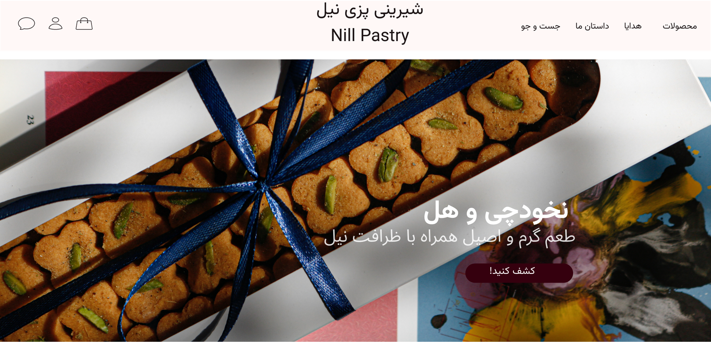

مریم رافتی حمایتی
UX/UI Designer
مسئله را با تحقیق کاربر تعریف میکنم و راهحل را تا رابط نهایی پیش میبرم.
کیساستادی
یک مسئله واقعی، یک مسیر کامل UX تا UI
همان پروژهای که در رزومه آمده: از مصاحبه تا رابط، روی یک برند فعال.

شیرینیپزی نیل
سفارش از اینستاگرام و تلگرام بود؛ قیمت، ارسال و پیگیری مبهم. با ۵ مصاحبه رفتارمحور، مسیر خرید را به تجربهای شفافتر و قابلاعتمادتر طراحی کردم.
- سه مانع خرید: کیفیت نامشخص و عکس غیرواقعی، قیمت پنهان، سکوت بعد از پرداخت
- قیمت و گام سفارش را از دایرکت به صفحه آوردم و اعتماد را با عکس واقعی، پشتصحنه و داستان برند ساختم
- بعد از پرداخت، پاسخ سریع با اطلاعات پیک، شماره تماس و زمان تقریبی رسیدن را طراحی کردم
درباره من
طراح محصولمحور با پیشینه مهندسی
طراح UX/UI با کارشناسی مهندسی رباتیک. مسئله را با تحقیق کاربر تعریف میکنم و راهحل را تا رابط نهایی پیش میبرم.
از دی ۱۳۹۹ تا اسفند ۱۴۰۳ در باشگاه رباتیک باغ کتاب به کودکان و نوجوانان رباتیک درس دادم. مفاهیم فنی را به مسیر قابلفهم تبدیل میکردم؛ گوشدادن و همدلی همان مهارتی است که در مصاحبه کاربر به کار میگیرم.
فرآیند کاری
Interview → Insights → Persona → Journey → Flow → Wireframe → UI
مسیر خطی نیست؛ حلقهای بین تحقیق، طراحی و بازبینی است.
تماس
برای همکاری در دسترسام
اگر بهدنبال طراح UX/UI هستید که تحقیق را به تصمیم طراحی وصل کند، خوشحال میشوم گفتوگو کنیم.